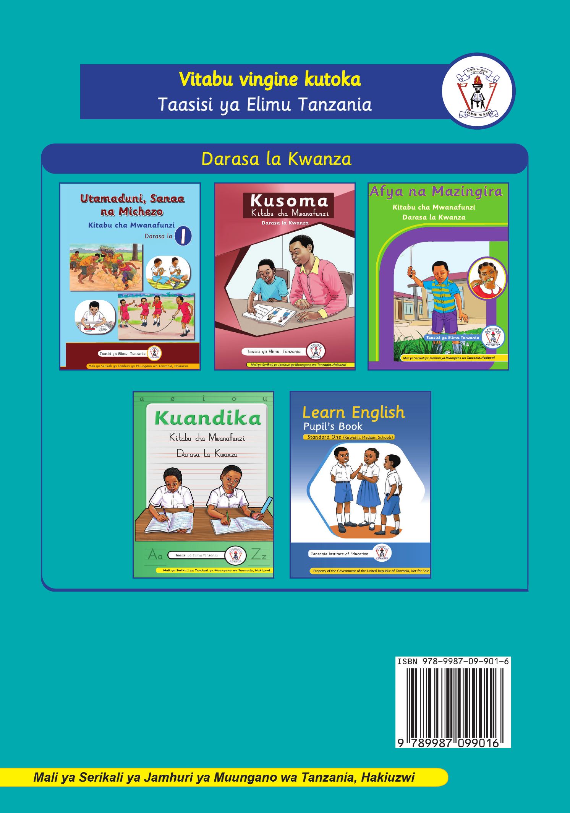

Jalada la nyuma la kitabu.
Vitabu vingine kutoka Taasisi ya Elimu Tanzania
Darasa la Kwanza
Jalada la nyuma linaonyesha vitabu vingine vya Darasa la Kwanza kutoka Taasisi ya Elimu Tanzania: Utamaduni, Sanaa na Michezo; Kusoma; Afya na Mazingira; Kuandika; na Learn English. Pia lina nembo ya Taasisi ya Elimu Tanzania na msimbo pau wa ISBN. Utamaduni, Sanaa na Michezo. Kitabu cha Mwanafunzi, Darasa la Kwanza.
Kusoma. Kitabu cha Mwanafunzi, Darasa la Kwanza.
Afya na Mazingira. Kitabu cha Mwanafunzi, Darasa la Kwanza.
Kuandika. Kitabu cha Mwanafunzi, Darasa la Kwanza.
Learn English. Pupil's Book. Standard One, Kiswahili Medium Schools.
ISBN: 978-9987-09-901-6
Mali ya Serikali ya Jamhuri ya Muungano wa Tanzania, hakiuzwi.
Mwisho wa ukurasa.